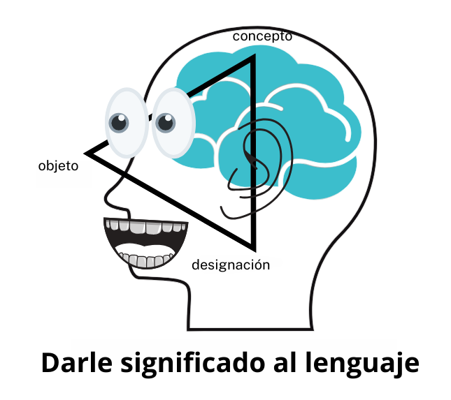

Terminología y la IA generativa
Por Alaina Brandt
Traducido por Santiago Isoard
En el creciente panorama tecnológico de hoy día, comprender cómo nos comunicamos y construimos el significado es más importante que nunca. Este análisis se centra en dos campos que se intersecan: la ciencia de la terminología, el estudio de cómo los seres humanos comprenden y nombran los conceptos, y la inteligencia artificial generativa (IA generativa). Al examinar estas áreas de manera conjunta, podemos entender mejor tanto los retos como las oportunidades de la comunicación entre humanos y máquinas.
Fundamentos de la Teoría de la terminología
El trabajo terminológico suele utilizarse para garantizar la calidad en actividades como la redacción, la traducción y la interpretación. Para aquellos involucrados en la comunicación con humanos, la terminología es un tema de suma importancia. Para entender el porqué, podemos analizar el triángulo semántico, también conocido como el Triángulo de Ogden y Richards, un modelo que ilustra cómo los seres humanos comprenden el significado de manera simplificada y sencilla.
- En uno de los vértices del triángulo se encuentran los objetos: cualquier cosa percibida o concebida, según la norma ISO 704.
- Otro vértice corresponde a los conceptos, es decir, la abstracción mental que hacen los seres humanos.
- En el tercer vértice se encuentran las designaciones, o las palabras de las lenguas que se utilizan para nombrar las abstracciones de los objetos.
La relación entre estos elementos es la manera en que los seres humanos construyen significado sobre el mundo que los rodea. Sin embargo, como señalo en el artículo Getting Started with Terminology Management: “That said, it’s important to remember that just because communities of speakers use common language doesn’t mean that those speakers share the exact same conceptualization of each object that’s designated.” (en español: “Dicho esto, es importante recordar que el hecho de que las comunidades de hablantes usen un lenguaje común no significa que esos hablantes compartan exactamente la misma conceptualización de cada objeto designado”.) Cada persona tiene ideas únicas sobre qué hace que un objeto físico sea “algo” y sobre las nociones abstractas como la amistad o la buena calidad.

Retos de la IA generativa y la terminología
La aparición de la inteligencia artificial generativa textual ha provocado interesantes debates dentro de los círculos terminológicos sobre sus implicaciones para el Triángulo Semántico. A diferencia del uso tradicional del lenguaje, en el que las palabras se conectan tanto con conceptos como con objetos del mundo real, la IA textual opera únicamente en el nivel de las designaciones (Dra. Sue Ellen Wright, comunicación personal, 2024). La IA procesa el lenguaje mediante patrones numéricos y agrupaciones por similitud, sin una comprensión real de los conceptos ni una conexión con referentes del mundo real. Esta desconexión fundamental de los componentes conceptuales y referenciales del triángulo ayuda a explicar por qué la IA generativa puede producir alucinaciones y resultados inexactos.
Grafos de conocimiento: la solución terminológica para la IA generativa
Los grafos de conocimiento ofrecen una solución prometedora a estos problemas de precisión de la IA. Un grafo de conocimiento es una forma estructurada de representar el lenguaje especializado, en la que los conceptos y objetos del mundo real se convierten en entidades (nodos) conectadas por relaciones (aristas). El lenguaje especializado es una lengua natural utilizada en un campo del conocimiento y caracterizada por el uso de medios de expresión específicos (norma ISO 1087). Cuando los datos terminológicos recopilados sobre este tipo de lenguaje se modelan estratégicamente dentro de un grafo, pueden integrarse en sistemas de IA generativa para mejorar la calidad de sus resultados más allá de lo que permite una consulta estándar a un modelo de lenguaje de gran tamaño.
Terminología e IA generativa textual: Conclusiones
Las principales ventajas de utilizar grafos de conocimiento terminológicos con IA generativa incluyen:
- Mayor precisión gracias a las relaciones estructuradas entre conceptos
- Mejor manejo de términos ambiguos mediante un contexto explícito
- Mayor capacidad para verificar información contra un conocimiento establecido.
- Correspondencia terminológica más confiable entre lenguas
Pon a prueba tus nuevos conocimientos
Ahora que has aprendido un poco sobre el arte de la terminología, pon a prueba tus nuevos conocimientos respondiendo este cuestionario.